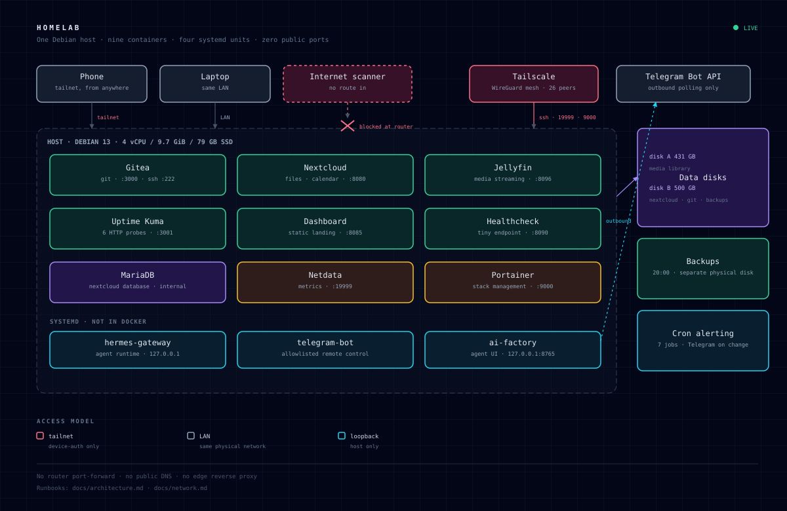

Identity, not geography
WireGuard peers authenticated per device. SSH, Netdata and Portainer live here and nowhere else.
self-hosted · debian 13 · tailscale
Documentation for a home server that runs my own git, files, media and metrics — how it is isolated, how it is monitored, how it is backed up, and what happened the three times it broke.
Three planes: data in containers, control in systemd, access through a private mesh.

WireGuard peers authenticated per device. SSH, Netdata and Portainer live here and nowhere else.
Six services answer on the local network only. No forward, no DNS record, verified from outside.
Agent runtime and its dashboard bind to 127.0.0.1. The bot only makes outbound calls.
Nine containers, four systemd units. One job each, one mount each, no shared state.
Every listening socket, what it is, and who can actually reach it.
| Port | Service | Bind | Scope |
|---|
A forward exposes every service to every scanner on the internet, and one unpatched app is the whole box. A private mesh moves the trust boundary to device identity — a much smaller thing to defend, and it works behind CGNAT.
make audit regenerates the matrix from the live host. Reachability was then tested from a second LAN device and from a mobile connection outside it: the six LAN ports time out, no route.
Last verified 2026-10-24 · ss -ltnp + external TCP probe · docs/network.md
Six HTTP probes, seven cron jobs, one nightly backup to a different physical disk.
The failures are the documentation. Three entries, written from the monitoring database.
What the threat model assumes, what was found during the sanitization pass, and what is still open.
0 of 0 done